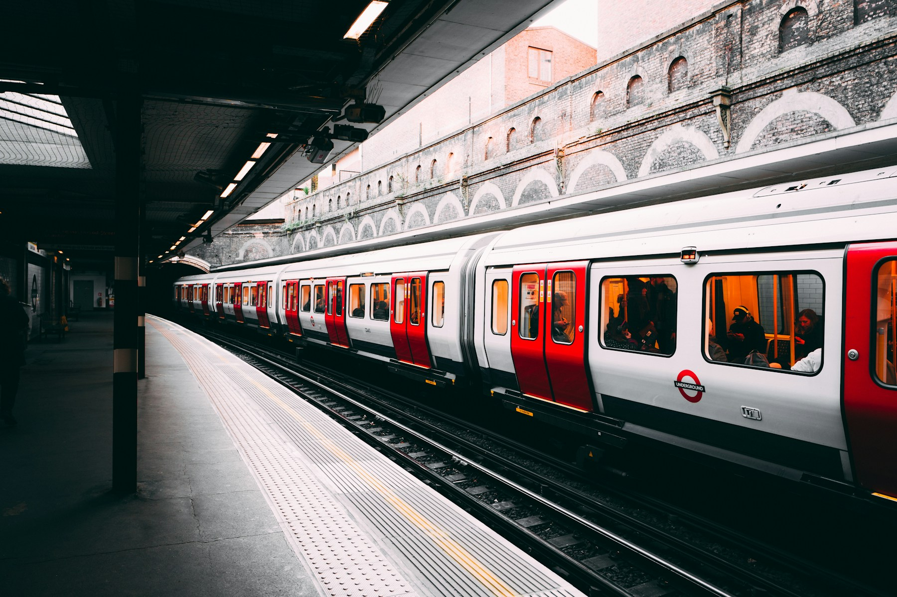
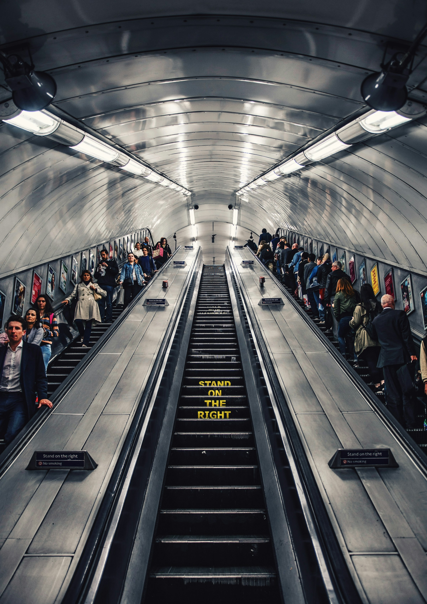
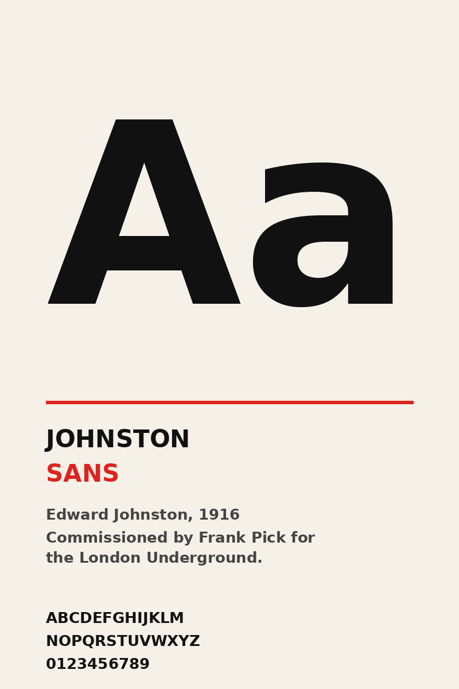

Two ways to represent a transit network — one truthful to the land, the other truthful to the rider.
BEFORE 1933
Geographic Maps
The Underground was drawn on top of London's streets. Stations in the centre huddled together in an unreadable knot; suburban stations floated in near-empty space.
F. H. Stingemore's 1932 map — the last of the geographic era — tried to compensate by slightly enlarging central London, but the fundamental problem remained: passengers don't navigate by longitude.
True to the city
Central stations crowded together
Line colours obscured by streets
FROM 1933
Beck's Diagram
Harry Beck — inspired by electrical schematics he'd drawn as a signalling draughtsman — discarded geography entirely. Lines became horizontals, verticals, and 45° diagonals. Stations were evenly spaced.
He understood that passengers, once underground, don't care about compass directions. They care about which line to board, which station to change at, and how many stops until home.
True to the journey
Evenly spaced stations
Lines instantly recognisable by colour

02
The Electrical Circuit
Beck trained as a signalling engineer. He drew circuits for a living — grids of components connected by orthogonal lines, where topology mattered but exact position did not.
When he sketched his 1931 prototype during a layoff, he applied the same logic to the Tube. Passengers, he reasoned, are electrons: what matters is the network they traverse, not the map coordinates they pass through.
The initial submission was rejected as "too revolutionary." A 500-copy trial run in 1932 proved the public disagreed with management.
Four Principles of the Diagram
The rules Beck imposed — and the compromises they forced.
01
Orthogonality
Every line segment runs horizontally, vertically, or at exactly 45°. No curves. No arbitrary angles. The system's grammar reduces to three directions.
02
Even Spacing
Stations along a line are placed at roughly equal intervals regardless of real distance. A stop is a stop; its significance to the rider is not measured in metres.
03
Colour Per Line
Each line gets one distinctive colour, applied consistently across the entire network. The Central is red. The Piccadilly is navy. Identity is instantaneous.
04
One Topographical Feature
Only the Thames survives from the geographic map, schematised into a stylised ribbon. Its role: orient the rider at a glance — north bank or south.

STYLE GUIDE
The Diagram, Reduced
Straight lines. Three angles. Interchange diamonds. A blue ribbon for the Thames. Everything else is colour, type, and the silence around them.
Pocket Maps Printed, 1933
The first two months of publication. The second print run was ordered after four weeks.
Figures are illustrative, reconstructed from period accounts.
From Sketch to Standard
The diagram's journey from a draughtsman's spare-time doodle to official network map.
1931
Sketch
Beck, laid off from the signalling office, drafts the diagram at home.
1932
Rejected
Publicity office rules the design too radical and returns it.
1932
Trial Run
A 500-copy pilot run is distributed at a few stations. The public approves.
1933
Published
Pocket edition — 700,000 copies. A reprint is ordered within a month.
1933
Standard
Large-format poster editions appear. The diagram becomes the Underground's face.
A Colour Per Line
Beck's insistence on a unique colour for every line survives to this day. The official TfL palette:
Line
Swatch
Opened
Stations
Character
Bakerloo
1906
25
Tobacco brown, named for a portmanteau of Baker Street and Waterloo.
Central
1900
49
Pillarbox red. Runs east–west the full width of the network.
District
1868
60
Deep green. The oldest in the network, predating Beck by decades.
Jubilee
1979
27
Silver grey, opened for the Queen's Silver Jubilee.
Piccadilly
1906
53
Dark blue. The airport line; connects Heathrow to the West End.
Victoria
1968
16
Light blue. The fastest and most automated line on the network.

Johnston Sans, 1916
Commissioned for the Underground
"
Looking at the old map of the Underground railways of London, it occurred to me that it might be possible to tidy it up by straightening the lines.
HARRY BECK · c. 1933, in an unpublished note
LEGACY
The Map Rewired London
"The positive image Beck provided encouraged more people to use the Underground … but the effect was also to change users' mental maps of London — affecting their geographical understanding of the city. Distance, direction and existence all get distorted and continue to do so today."
Alexander J. Kent — Reader in Cartography, Canterbury Christ Church University
PREDECESSORS
Max Gill removed topographic detail. Fred Stingemore added Johnston font and distorted the network. Beck inherited their work and pushed it to its logical conclusion.
USER-CENTRED
Beck was himself a commuter. He stripped away what a map "should" be in favour of what riders actually needed: a clear route planner, nothing more.
AFTER BECK
He continued refining the map until 1959. He also designed posters, drew cartoons for the staff magazine, and tutored typography. He died in 1974.
11
A Viral Reimagining
In 2024, a psychology lecturer's alternative map got over a million engagements in 24 hours.
1M+
engagements in 24 hours
Maxwell Roberts, a university psychology lecturer, reimagined the Tube map using concentric circles and spokes — placing the Circle Line at the centre as a roundel shape, and radiating outwards.
He first built the design in 2013, updated it in 2024 after TfL published their own circular version.
"It has poor balance, simplicity, coherence and topographical accuracy. It fails by any criterion of effectiveness you can imagine."